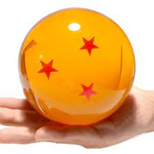
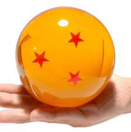

DRAGON BALL Z

a brief story about you man unknowing to us all would one day save the world on an epic scale on mutiple occassions kakarott also know as Goku
all images below will direct you to the art gallery so if your done reading check it out!
 click here to go gallery
click here to go gallery
click here none fan search somthing else on google bye!
Kakarot (カカロット, Kakarotto), renamed Goku on Earth by Grandpa Gohan, was born sometime in Age 737 on Planet Vegeta,
during a time of great turmoil. Following a Saiyan custom, Goku was sent as a baby to planet Earth, in order to destroy
its inhabitants and clear the planet for its future sale. As Earth's inhabitants were thought to be weak, a baby Saiyan
was seen as enough for the task, especially after transforming into a Great Ape by Earth's full moon. Goku's father, a
low-class Saiyan warrior named Bardock,
perished in his home planet's destruction shortly after Goku's departure, as
well as his mother, Gine, and his older brother Raditz was nowhere to be seen. After crash-landing on Earth, Goku became
the adopted grandson of an old man named Gohan, who found him in the woods and gave him his human name. At first, Goku
was extremely violent and ill-tempered, not obeying Gohan at all. But one day he fell down a deep ravine and hit his
head, suffering severe head trauma that sent him into a coma and very nearly killed him. After he woke up, he had lost
all of his Sayian aggression, becoming a kind and mild-mannered young boy. His Grandpa Gohan taught him martial arts and
told him about such things as the city and people, as they lived in a very remote place in Mount Paozu, with no
communication with other people. Gohan one day discovered Goku's full moon transformation, and thus told him to never
look at the full moon. However, one night Goku did, and he transformed into a Great Ape,
causing him to unknowingly kill
Gohan. Afte
r his grandpa's death, Goku stayed at his home, carrying out his daily life of survival. From a young age, Goku
developed the impression that his birth parents abandoned him in the mountains as a baby, leaving him for Grandpa Gohan
to discover.
Goku is known for his happy and optimistic personality.

back to top
all images below will direct you to the art gallery so if your done reading check it out!
click here none fan search somthing else on google bye!
Kakarot (カカロット, Kakarotto), renamed Goku on Earth by Grandpa Gohan, was born sometime in Age 737 on Planet Vegeta, during a time of great turmoil. Following a Saiyan custom, Goku was sent as a baby to planet Earth, in order to destroy its inhabitants and clear the planet for its future sale. As Earth's inhabitants were thought to be weak, a baby Saiyan was seen as enough for the task, especially after transforming into a Great Ape by Earth's full moon. Goku's father, a low-class Saiyan warrior named Bardock, perished in his home planet's destruction shortly after Goku's departure, as well as his mother, Gine, and his older brother Raditz was nowhere to be seen. After crash-landing on Earth, Goku became the adopted grandson of an old man named Gohan, who found him in the woods and gave him his human name. At first, Goku was extremely violent and ill-tempered, not obeying Gohan at all. But one day he fell down a deep ravine and hit his head, suffering severe head trauma that sent him into a coma and very nearly killed him. After he woke up, he had lost all of his Sayian aggression, becoming a kind and mild-mannered young boy. His Grandpa Gohan taught him martial arts and told him about such things as the city and people, as they lived in a very remote place in Mount Paozu, with no communication with other people. Gohan one day discovered Goku's full moon transformation, and thus told him to never look at the full moon. However, one night Goku did, and he transformed into a Great Ape, causing him to unknowingly kill Gohan. Afte r his grandpa's death, Goku stayed at his home, carrying out his daily life of survival. From a young age, Goku developed the impression that his birth parents abandoned him in the mountains as a baby, leaving him for Grandpa Gohan to discover. Goku is known for his happy and optimistic personality.

back to top